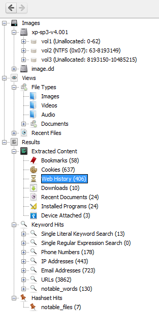

About Data Explorer (Directory Tree)
The data explorer tree is a very important area of the interface.
This is where you will start many of your analysis approaches and find saved results from automated procedures (ingest).
The tree has three main areas:
- Images: Where you can find the directory tree hierarchy of the file systems in the images.
Go here to navigate to a specific file or directory.
- Views: Where you can view all of the files in the images, but organized by file type or dates instead of directories. Go here if you are looking for files of a given type or that were recently used.
- Results: Where you can see the results from the background ingest tasks and you can see your previous search results. Go here to see what was found by the ingest modules and to find your previous search results.
- Bookmarks: Where you can view all file and results that have been bookmarked for easy access.
Below is an example of an Data Explorer Tree window:
